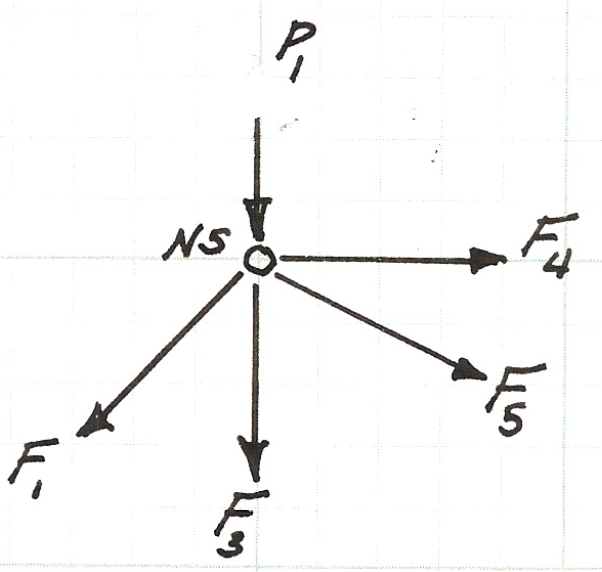

CE 2301 Engineering Mechanics (Statics)¶
%%html
<!--Script block to left align Markdown Tables-->
<style>
table {margin-left: 0 !important;}
</style>
Application of Computational Thinking to a Statically Determinate Truss¶
A downstream application of ENGR-1330
Contributed by Theodore Cleveland
Note
Prerequesites
Students have completed ENGR-1330; Students (by virtue of ENGR-1330) will have functioning implementations of JupyterLab
Students are enrolled in CE 2301
Problem Modality (and Solution)
Homework problem solved using Jupyter Notebook
Synthesize findings in a report embedded into the Notebook
Special Instructions
Instructor preference; either individual or group report.
Instructor should review main principles of Computational Thinking and A Problem Solving Protocol (below)
Computational Thinking with Data Science (Review)¶
Review main principles of CT :
Algorithm - A list of steps that you can follow to finish a task
Decomposition - Break a problem down into smaller pieces
Abstraction - Pulling out specific differences to make one solution work for multiple problems
Pattern Matching - Finding similarities between things
CT Problem Solving Protocol (from ENGR-1330)
Explicitly state the problem
State: - Input information - Governing equations or principles, and - The required output information.
Work a sample problem by-hand for testing the general solution.
Develop a general solution method (coding).
Test the general solution against the by-hand example, then apply to the real problem.
Refine the general tool for frequent application with varying inputs
Start the problem/solution example; explicitly identify CT principles as problem proceedes.
A typical static truss analysis problem goes like
"The figure below is a simply supported, statically determinate truss with pin connections (zero moment transfer connections). Find the forces in each member for the loading shown."
This example will leverage linear systems solver(s) to analyze the truss. The approach uses concepts from statics and computational thinking.
From statics
method of joints (for reactions and internal forcez)
direction cosines
From computational thinking
read input file
construct linear system \(\textbf{Ax=b}\); solve for \(\textbf{x}\)
report results
Problem Solving Protocol¶
Recall the problem solving protocols in ENGR-1330-S2021-Cleveland
Define the problem (problem statement)
Gather information (identify known and unknown values, and governing equations)
Generate and evaluate potential solutions
Refine and implement a solution
Verify and test the solution.
We can stipulate that Step 1 is already done,
Known Values:¶
Geometry (angles, not necessarily the mamber lengths and (x,y,z) coordinates of the junctions.
External loads
Unknown Values¶
Support reactions
Member forces
Governing Principles¶
These are going to be problem and discipline specific; in this case two-force memebrs are assumed (stipulated), and the network is statically determinate. The ability to construct and find solutions to a non-singular linear system is assumed. The solution of linear systems is presented in ENGR-1330 in the following contexts:
Linear Algebra using Numpy ENGR-1330-S2021-Cleveland
Data Modeling: Regression Approach (Specifically, the later part of the lesson performs regression by solving linear systems entirely using python primatives) ENGR-1330-S2021-Cleveland
Whatever students get in Calculus at this point
Abstraction – The Free-Body Diagram¶
Before even contemplating writing/using a program we need to build a mathematical model of the truss and assemble the system of linear equations that result from the model. A fundamental abstraction is to sketch a free-body-diagram as below and build a node naming convention (a type of pattern matching) and force names(abstraction with intent to replicate/automate).

Decomposition – Node-by-Node Analysis¶
Next we will write the force balance for each of the six nodes (\(N1\)-\(N6\)), which will produce a total of 12 equations in the 12 unknowns (the 9 member forces, and 3 reactions). This is fundamentally a decomposition activity. While specific to this geometry, we could extend the analysis to allow for an external force at all nodes considered, and be able to solve for nearly any loading condition.
The figure below is the force balance for node \(N1\), the two force equations (for the horizontal, \(x\), direction and the vertical, \(y\), direction) are listed below the figure.

The equation above is the force balance equation pair for the node. The \(x\) component equation will later be named \(N1_x\) to indicate it arises from Node 1, \(x\) component equation. A similar notation convention will also be adopted for the \(y\) component equation. There will be an equation pair for each node.
Below is a sketch of the force balance for node \(N2\), the two force equations (for the horizontal, \(x\), direction and the vertical, \(y\), direction) are listed below the figure.
Below is a sketch of the force balance for node \(N3\), the two force equations (for the horizontal, \(x\), direction and the vertical, \(y\), direction) are listed below the figure.

Above is the force balance equation pair for node \(N3\).
Below is a sketch of the force balance for node \(N4\), the two force equations (for the horizontal, \(x\), direction and the vertical, \(y\), direction) are listed below the figure.

Above is the force balance equation pair for node \(N4\).
Below is a sketch of the force balance for node \(N5\), the two force equations (for the horizontal, \(x\), direction and the vertical, \(y\), direction) are listed below the figure.

Above is the force balance equation pair for node \(N5\).
Below is a sketch of the force balance for node \(N6\), the two force equations (for the horizontal, \(x\), direction and the vertical, \(y\), direction) are listed below the figure.

Above is the force balance equation pair for node \(N6\).
System Integration - Assemble the Network Equations¶
The CT principle of system integration (not listed above but a legitimate component) as part of algorithm development is to gather the equation pairs into a single system of linear equations.
We will move the known loads to the right hand side and essentially construct the matrix equation \(\mathbf{A}\mathbf{x} = \mathbf{b}\).
The system below is a matrix representation of the equation pairs with the forces moved to the right hand side \(\mathbf{b} = RHS\).
In the system, the rows are labeled on the left-most column with their node-related equation name.
Thus each row of the matrix corresponds to an equation derived from a node.
The columns are labeled with their respective unknown force (except the last column, which represents the right-hand-side of the system of linear equations).
Thus the coefficient in each column corresponds to a force in each node equation.
The sign of the coefficient refers to the assumed direction the force acts.
In the analysis all the members were assumed to be in tension (except for the reaction forces).
If a coefficient has a value of zero in a particular row, then that force does no act at the node to which the row corresponds.
From this representation the transition to the formal vector-matrix representation is straightforward.
First the coefficient matrix that is the result of the decomposition and node-by-node analysis.
Then the vector (numpy array) of unknowns that are identified by decomposition and node-by-node analysis.
And the right-hand side of forcing values, in this case three non-zero values
Algorithm (Initial Steps)¶
The supervisory algorithm at this point is straightforward, we want to solve
for
The various matrices above are entered into text files named A.txt and B.txt, we can examine the file contents using the cells below (they are suppressed for the Jupyter Book)
# list contents of the A matrix, uses call to OS host (replace `cat` with `type` if on a windoze Machine)
!(cat A.txt)
# list contents of RHS (AKA b) vector
!(cat B.txt)
Now we use our solver tools,
import numpy # load the numpy module
amatrix = [] # null list to store matrix reads
bvector = [] # null list to store matrix reads
rowNumA = 0 # a counter, needed to parse input files
colNumA = 0 # a counter, needed to parse input files
rowNumB = 0 # a counter, needed to parse input files
afile = open("A.txt","r") # connect and read file for MATRIX A
for line in afile:
amatrix.append([float(n) for n in line.strip().split()])
rowNumA += 1
afile.close() # Disconnect the file
afile = open("B.txt","r") # connect and read file for VECTOR B
for line in afile:
bvector.append(float(line)) # vector read different -- just float the line
rowNumB += 1
afile.close() # Disconnect the file
A = numpy.array(amatrix) # create A
b = numpy.array(bvector) # create b
x = numpy.linalg.solve(A, b) # solve for x
#for i in range(0,len(x)): # rudimentary output
# print(x[i])
Algorithm (Refinement)¶
To refine the algorithm, the obvious step is to label the output
labels =['F1','F2','F3','F4','F5','F6','F7','F8','F9','Ax','Ay','By'] #a list of labels, should automate as needed
for i in range(0,len(x)): # rudimentary output
print(labels[i]," = ",round(x[i],3),' pounds(force)')
F1 = -1035.271 pounds(force)
F2 = 732.047 pounds(force)
F3 = 0.0 pounds(force)
F4 = -267.953 pounds(force)
F5 = -535.906 pounds(force)
F6 = 732.047 pounds(force)
F7 = 767.953 pounds(force)
F8 = 267.953 pounds(force)
F9 = -378.943 pounds(force)
Ax = -0.0 pounds(force)
Ay = 732.047 pounds(force)
By = 267.953 pounds(force)
Conclusion/Suggested Extensions
Modify the analysis so forces at nodes are not necessary vertical, also include forces at all nodes (even zero valued) so can analyze any conditions for the truss
Extend the size several more panels both directions so can approximate internal forces in a homogeneous beam (advanced).
Mention that material properties (and knowledge of node coordinates, allows solutions for indeterminate cases (this is covered in another class))
References¶
Johnson, J. (2020). Python Numpy Tutorial (with Jupyter and Colab). Retrieved September 15, 2020, from https://cs231n.github.io/python-numpy-tutorial/
Willems, K. (2019). (Tutorial) Python NUMPY Array TUTORIAL. Retrieved September 15, 2020, from https://www.datacamp.com/community/tutorials/python-numpy-tutorial?utm_source=adwords_ppc
Willems, K. (2017). NumPy Cheat Sheet: Data Analysis in Python. Retrieved September 15, 2020, from https://www.datacamp.com/community/blog/python-numpy-cheat-sheet
W3resource. (2020). NumPy: Compare two given arrays. Retrieved September 15, 2020, from https://www.w3resource.com/python-exercises/numpy/python-numpy-exercise-28.php
Sorting https://www.programiz.com/python-programming/methods/list/sort
Overland, B. (2018). Python Without Fear. Addison-Wesley ISBN 978-0-13-468747-6.
Grus, Joel (2015). Data Science from Scratch: First Principles with Python O’Reilly Media. Kindle Edition.
Precord, C. (2010) wxPython 2.8 Application Development Cookbook Packt Publishing Ltd. Birmingham , B27 6PA, UK ISBN 978-1-849511-78-0.
# Preamble script block to identify host, user, and kernel
import sys
! hostname
! whoami
print(sys.executable)
print(sys.version)
print(sys.version_info)
atomickitty
sensei
/opt/jupyterhub/bin/python3
3.8.10 (default, Nov 26 2021, 20:14:08)
[GCC 9.3.0]
sys.version_info(major=3, minor=8, micro=10, releaselevel='final', serial=0)